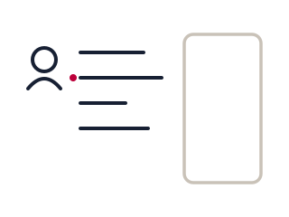

내 고객
고객관리
등록·진행상태·미팅·메모를 처리합니다. 폰·태블릿 어디서든 같은 고객이 열립니다.
내 고객 저장소
내 PC의 고객 저장소(mg-clients)를 한 번 연결하면 기존 고객 전체가 목록에 올라옵니다. 이후 등록·삭제·이관은 이 화면에서 처리합니다. 서버에 올리기 전까지는 이 PC 밖으로 나가지 않습니다. 올리면 서버가 서버 열쇠로 감싸 보관하고, 꺼낼 때 풀어 담당 설계사 본인에게만 보여 줍니다.
연결된 저장소 없음저장소 폴더를 선택해 시작합니다. 폴더명(C-YYYY-NNN)이 곧 고객코드이며, 기존 고객은 한 번에 등록됩니다.
서버 고객 — 폰·태블릿·다른 PC 어디서든 로그인만 하면 내 고객이 열립니다. 서버가 서버 열쇠로 감싸 저장하고, 담당 설계사는 자기 고객만 받습니다. 총관리자는 열람 비밀번호를 넣을 때만 팀원 고객을 봅니다.
서버 고객을 보려면 먼저 로그인하세요.
팀원 고객 보기 (총관리자)
열람 비밀번호를 넣으면 그 사람 고객이 열립니다. 퇴사·인수인계·점검이 여기서 끝납니다. 누를 때마다 비밀번호를 묻습니다.
-
0명 골랐습니다

고객을 선택하세요목록에서 고객을 선택하면 프로필, 메모, 보유보험을 확인할 수 있습니다.